Contents
- Visual stimuli in Signals
- Shapes
- Example 1: Coloured shapes
- Example 2: Kalatsky stimuli
- Images
- Example 1: A static image tiled
- Example 2: Dynamic images
- Example 3: A windowed image
- Gratings
- Example 1: A fullscreen sine wave grating
- Example 2: A fullscreen square wave grating
- Example 3: A rotating Gabor patch
- Example 4: A plaid
- Checkerboards
- Example 1: A fullscreen checkerboard
- Example 2: Pulsating noise
- Example 3: A reversing checkerboard pattern
- Grid
- Adding stimuli to the renderer
- FAQ
- Is there a way to create a variable number of visual stimuli?
- I don't have any errors but my stimulus won't appear. Why?
- Changing a parameter has no affect on the stimulus. Why?
- How do I create a novel stimulus?
- Notes
- Etc.
Visual stimuli in Signals
This tutorial will demonstrate how to create various visual stimuli in Signals. Below is an exhaustive list of pre-built stimuli in Signals. They are all located in signals/+vis.
The first input to each function must be a signal. This is only used to find what network your using, so it can be any signal. In the below examples we'll create a stimulus window, a Time signal that's controlled with a start/stop button, and a rendering function that will work in a similar way to the visual stimulus signal in your expDef (see 'Adding stimuli to the renderer' section). This code can be used for playing around with visual stimuli without having to write a whole expDef (See note 1 for how to run the examples)
PsychDebugWindowConfiguration % Make our screen transparant [t, setgraphic] = sig.test.playgroundPTB; vs = StructRef; % This mimicks the fourth input arg of your expDef % [Run setgraphic(vs) after assigning your stim]
The signals returned by the visual stimulus functions have various fields that can be assigned values. The fields are themselves signals and the names of the fields depend on what parameters are available for that stimulus. All fields can be set as constants (e.g. a double, char, etc.) or as a signal, in which case the stimulus will only be rendered when all input signals have a value (i.e. have updated at least once).
Assigning signals to these fields allows you to change things like size, orientation and visibility during the experiment. Thanks to the viewing model used, most of the parameters are defined in visual field space (i.e. visual degrees). All stimuli has a 'show' field which when false the stimulus is not drawn to the screen. This field is false by default so be sure to set this field. If set to true, the stimulus will be visible throughout the entire experement (so long as its inputs have values).
Shapes
Shapes can be created using vis.patch. Available shapes are square, circle and cross.
help vis.patch
vis.patch Returns a Signals patch stimulus defining a texture of a shape Produces a visual element for parameterizing the presentation of a shape.
Inputs:
t - Any signal; used to obtain the Signals network ID.
shape - char array defining what shape to show. Options are
'rectangle' (default), 'circle' and 'cross'. Outputs:
elem - a subscriptable signal containing fields which parametrize
the stimulus, and a field containing the processed texture layer.
Currently, any of the fields but 'dims' for 'circle' may be a signal. Stimulus parameters (fields belonging to elem):
azimuth - the azimuth of the image (position of the centre pixel in
visual degrees). Default 0
altitude - the altitude of the image (position of the centre pixel
in visual degrees). Default 0
dims - the dimensions of the shape in visual degrees. May be an
array of the form [width height] or a scalar if these dimensions
are equal. Default [10 10]
orientation - the orientation of the shape in degrees. Default 0
colour - an array defining the intensity of the red, green and blue
channels respectively. Values must be between 0 and 1.
Default [1 1 1]
show - a logical indicating whether or not the stimulus is visible.
Default falseSee Also vis.emptyLayer, vis.grating, vis.checker6, vis.grid, vis.image
Example 1: Coloured shapes
Below is some code for creating a few shapes in signals, setting their position, orientation and colour.
% Create a rotated square that spans 50 visual degrees square = vis.patch(t, 'rect'); square.dims = [50 50]; % [azimuth altitude] square.orientation = 45; % degrees; 0 = vertical square.show = true; % Create a blue circle to the left of the square circle = vis.patch(t, 'circ'); circle.azimuth = -90; % 0 visual degrees means the centre along horizontal axis circle.altitude = -10; % 0 visual degrees means the centre along vertical axis circle.dims = [15 15]; circle.colour = [0 0 1]; % Normalized colour % Let's show the circle 5 out of every 10 seconds showCircle = skipRepeats(mod(t, 10) < 5); circle.show = showCircle; % Create a red cross to the right of the square cross = vis.patch(t, 'plus'); % same as 'cross' cross.azimuth = 90; cross.altitude = 10; cross.dims = [20 20]; cross.orientation = 0; % Default value cross.colour = [1 0 0]; % Let's show the cross whenever the circle is hidden cross.show = ~showCircle; % Add our stimuli to the renderer. The names we choose aren't important. vs.square = square; vs.plus = cross; vs.circle = circle;
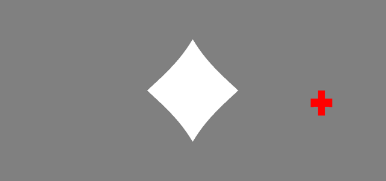
Example 2: Kalatsky stimuli
Below is an example of how to implement the reversing bar mapping stimuli (Kalatsky & Stryker 2003).
% Define some parameters used by both bars. These are constants but could % be made into parameter signals or be derived from other signals aziRange = 135; % The horizontal sweep bounds of the bars w = 5; % bar width in visual degrees flipFreq = 2; % Frequency of colour reversal in Hz sweepFreq = 5; % sweep frequency in visual degrees per sec % Compute colour flips and azimuthal position white = skipRepeats(t.mod(1) < 1/flipFreq); % periodically flips between true and false azimuth = mod(t*sweepFreq, aziRange * 2) - aziRange; % -aziRange < azimuth < aziRange % Define the two bars barLeft = vis.patch(t, 'rect'); % Current azimuth shifted left by half the total width barLeft.azimuth = azimuth - w/2; barLeft.colour = [1 1 1] * white; barLeft.dims = [w 150]; % [azimuth altitude] barRight = vis.patch(t, 'rect'); % Current azimuth shifted right by half the total width barRight.azimuth = azimuth + w/2; barRight.colour = [1 1 1] * ~white; barRight.dims = [w 150]; % [azimuth altitude] % Show both bar stimuli [barLeft.show, barRight.show] = deal(true); % Render stimulus vs.bar1 = barLeft; vs.bar2 = barRight;
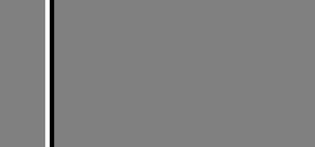
This example can be easily adapted to do reverse sweeps and vertical sweeps, etc.
Images
Image data can be displayed in Signals using the vis.image function. The source image data can be a signal or a matrix of values. The function can also be given a filepath from which to load the image. See signal\docs\examples\imageWorld.m for an example passive image presentation expDef.
help vis.image
vis.image Returns a visual element for image presentation in Signals Produces a visual element for parameterizing the presentation of an image.
Inputs:
t - Any signal; used to obtain the Signals network ID.
sourceImage - Either a standard image file, or path to a MAT file
containing an image represented as a numeric array, or a signal
whose value is an image represtented as a numeric array.
alpha - the alpha value(s) for the image (optional). Can be a
single value or array the size of 'sourceImage.' If no alpha value
is provided and sourceImage is a char the image will be opaque.
This input overrides the source image's values if it has any. Outputs:
elem - a subscriptable signal containing fields which parametrize
the stimulus, and a field containing the processed texture layer.
Any of the fields may be a signal. Stimulus parameters:
sourceImage - see above
window - If 'gaussian' or 'gauss', a Gaussian window is applied over
the image. Default is 'none'.
sigma - the size of the gaussian window in visual degrees [w h].
Default [5 5].
azimuth - the azimuth of the image (position of the centre pixel in
visual degrees). Default 0
altitude - the altitude of the image (position of the centre pixel
in visual degrees). Default 0
dims - the dimensions of the shape in visual degrees. May be an
array of the form [width height] or a scalar if these dimensions are
equal. Default [10 10]
orientation - the orientation of the image in degrees. Default 0
repeat - a logical indicating whether or not to repeat the image
over the entire visual field. Default false
show - a logical indicating whether or not the stimulus is visible.
Default falseNB: If loading multiple visual elements with different image paths, ensure that the images themselves have unique filenames.
See Also vis.emptyLayer, vis.patch, vis.grating, vis.checker6, vis.grid, imread
Example 1: A static image tiled
For information on supported files types, see imread.
imgPath = which('ngc6543a.jpg'); image = vis.image(t, imgPath); image.dims = [50 50]; % The size of each 'tile' image.orientation = 0; % Unrotated image.repeat = true; % Tile the image across the entire window; false by default image.show = true; vs.img = image;
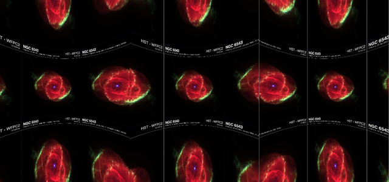
Example 2: Dynamic images
The second input argument call also be set by assigning to the 'sourceImage' field of the stimulus signal. This can be a path to an image file, a mat file or a signal. If a Signal then the texture becomes dynamic allowing you to present any number of images. If 'sourceImage' is a signal it should be a numerical matrix. It should be either [MxNx1] (a gray-scale image), MxNx3 (an array of RGB values) or MxNx4 (an array of RGBA values). The alpha value(s) can also be set via the 'alpha' field.
clown = loadVar(which('clown.mat'), 'X'); street = imread(which('street1.jpg')); % Switching signal flipFreq = 1/2; % Switch image at 0.5 HZ flip = skipRepeats(sin(t*flipFreq*2*pi) > 0); % Value of 0 or 1 index = flip + 1; % Value 1 or 2 % Define the stimulus stim = vis.image(t); stim.sourceImage = index.selectFrom(clown, street); stim.dims = [70 50]; % The size of image in visual degrees stim.show = true; vs.img = stim;
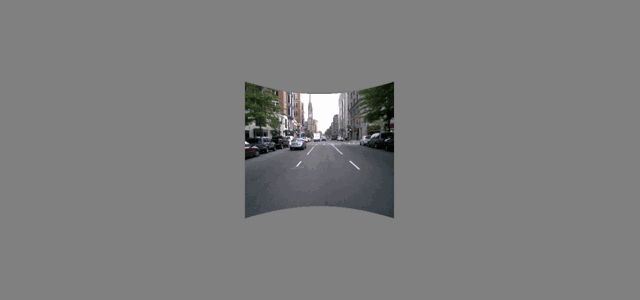
To display multiple images at once, define a seperate vis.image signal for each image.
Example 3: A windowed image
Below is an example of how to display a Gaussian-windowed image. This can be useful if your image has edges that may produces unwanted visual cortex responses.
% Set screen background colour to black ptr = Screen('Windows'); Screen(ptr, 'FillRect', 0) Screen(ptr, 'Flip'); % Draw our windowed image windowedImg = vis.image(t, which('ngc6543a.jpg')); windowedImg.azimuth = 35; windowedImg.altitude = 10; windowedImg.dims = [50, 50]; windowedImg.orientation = 35; windowedImg.show = true; windowedImg.window = 'gaussian'; windowedImg.sigma = [10, 9]; % Window size vs.img = windowedImg;
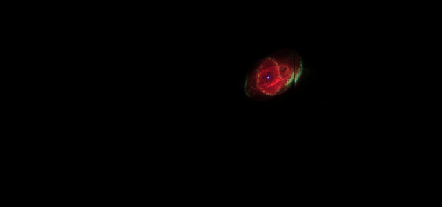
Gratings
Gratings are perhaps the most comman stimulus used in visual psychophysics. The vis.grating function allows you to define square and sinusoidal gratings of a given orientation, phase, frequency, contrast and colour. Gratings may also be windowed to produce a Gabor patch stimulus.
help vis.grating
vis.grating Returns a Signals grating stimulus defining a grating texture Produces a visual element for parameterizing the presentation of a grating. Produces a grating that can be either sinusoidal or square-wave, and may be windowed by a Gaussian stencil, producing a Gabor patch.
Inputs:
t - Any signal; used to obtain the Signals network ID.
grating - A char array defining the nature of the grating. Options
are 'sinusoid' (default) or 'squarewave'.
window - A char array defining the type of windowing applied.
Options are 'gaussian' (default) or 'none'. Outputs:
elem - a subscriptable signal containing fields which parametrize
the stimulus, and a field containing the processed texture layer.
Any of the fields may be a signal. Stimulus parameters (fields belonging to elem):
grating - see above
window - see above
azimuth - the azimuth of the image (position of the centre pixel in
visual degrees). Default 0
altitude - the altitude of the image (position of the centre pixel
in visual degrees). Default 0
sigma - if window is Gaussian, the size of the window in visual
degrees. Must be an array of the form [width height].
Default [10 10]
phase - the phase of the grating in visual degrees. Default 0
spatialFreq - the spatial frequency of the grating in cycles per
visual degree. Default 1/15
orientation - the orientation of the grating in degrees. Default 0
colour - an array defining the intensity of the red, green and blue
channels respectively. Values must be between 0 and 1.
Default [1 1 1]
contrast - the normalized contrast of the grating (between 0 and 1).
Default 1
show - a logical indicating whether or not the stimulus is visible.
Default falseSee Also vis.emptyLayer, vis.patch, vis.image, vis.checker, vis.grid
Example 1: A fullscreen sine wave grating
grating = vis.grating(t, 'sine', 'none'); % 'sin' and 'sinusoid' also acceptable grating.spatialFreq = 1/2; % Also in visual degrees grating.phase = pi/2; grating.contrast = 0.5; % Contrast values from 0 to 1 grating.show = true; vs.stim = grating;
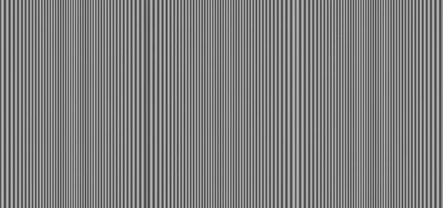
Example 2: A fullscreen square wave grating
grating = vis.grating(t); grating.grating = 'square'; % also 'sq' or 'squarewave' grating.window = 'none'; grating.orientation = 45; grating.spatialFreq = .1; grating.colour = [0 1 0]; % Green grating.show = true; vs.stim = grating;
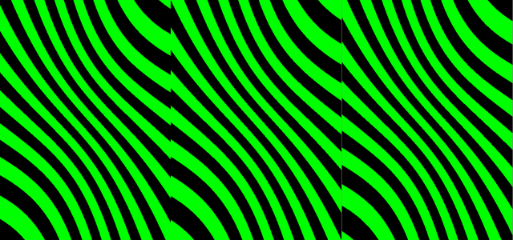
Example 3: A rotating Gabor patch
In this example we define a Gabor patch with a sigma of 15 degrees, that rotates at a frequency of 10 degrees per second.
gabor = vis.grating(t); gabor.sigma = [15; 15]; % Size of Gaussian window. Shape doesn't matter gabor.orientation = t.mod(360) * 10; % frequency of 10 degrees per second gabor.show = true; vs.elem = gabor;
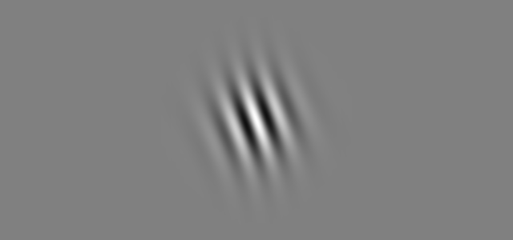
Example 4: A plaid
Note that all windowed stimuli are semi-transparant as the window affects the alpha channel of that stimulus. Thefore if a windowed stimulus is covering another stimulus, both will be slightly visable.
In this way you can create a layer Gabors to create a plaid:
vertical = vis.grating(t, 'sine', 'gauss'); vertical.orientation = 0; horizontal = vis.grating(t, 'sine', 'gauss'); horizontal.orientation = 90; [horizontal.show, vertical.show] = deal(true); % show both vs.horizontal = horizontal; vs.vertical = vertical;
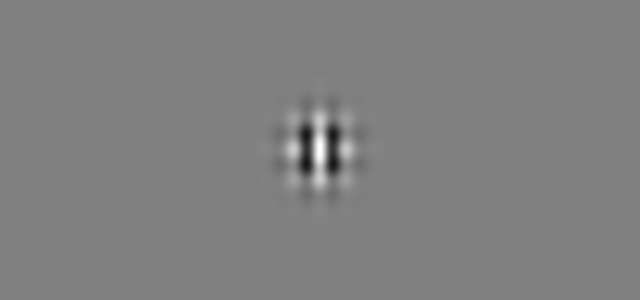
Checkerboards
A grid of rectangles used for receptive field mapping. This can be used to create sparse noise stimuli
NB In future versions of Signals there will be only one function, vis.checker, as the others are either redundant or early versions. If you have vis.checker6 in your respostory, use that one.
help vis.checker
vis.checker A grid of rectangles Produces a visual element for parameterizing the presentation of checkerboard stimuli. The colour of individual rectangles in the grid can be set.
Inputs:
t - Any signal; used to obtain the Signals network ID. Outputs:
elem - a subscriptable signal containing fields which parametrize
the stimulus, and a field containing the processed texture layer.
Any of the fields may be a signal. Stimulus parameters (fields belonging to 'elem'):
azimuthRange - The horizontal range in visual degrees covered by the
checkerboard. Default [-135 135]
altitudeRange - The vertical range in visual degrees covered by the
checkerboard. Default [-37.5 37.5]
rectSizeFrac - The horizontal and vertical size of each rectangle
as a fraction. If less than 1, there will be a gap between
neighbouring rectangles. Default [1 1]
colour - an array defining the intensity of the red, green and blue
channels respectively. Values must be between 0 and 1.
Default [1 1 1]
pattern - A matrix of values between -1 and 1, defining the
intensity/contrast of each rectangle. -1 corresponds to black, and
1 to max colour. Rectangles with a value of 0 are invisible. The
number of rows and columns defines the number of checkers within the
altitude and azimuth range.
Default = [
1 -1 1 -1
-1 0 0 0
1 0 0 0
-1 1 -1 1];
show - a scalar logical indicating whether or not the stimulus is
visible. Default falseSee Also vis.emptyLayer, vis.patch, vis.image, vis.grid
Example 1: A fullscreen checkerboard
Below is an example of a fullscreen gridded high-contrast 10 x 20 checkerboard stimulus, whose checkers change at a rate of 20Hz.
% Define a sampler signal that will update our checkerboard pattern at a % given rate. samplerFs = 20; % Hz sampler = skipRepeats(floor(t*samplerFs)); % updates at our sampling rate % Create the checker stimulus checker = vis.checker(t); checker.show = true; % Turn on % A grid of 10 rectangles along the altitude, 20 along the azimuth gridSize = [10 20]; % Each time the sampler updates, call randi, which will produce a [10 20] % array of values between 0 and 3. Subtract 2 from this to make values % between -1 and 1. checker.pattern = sampler.map(@(~) randi(3, gridSize)-2); % Each rectangle takes up 95% of its space, leaving a gap between % neighbouring rectangles. checker.rectSizeFrac = [0.95 0.95]; % Set the range of the checkerboard in visual degrees. The size of the % range and the size of the pattern array determines the size of the % individual squares. checker.azimuthRange = [-135 135]; checker.altitudeRange = [-35 35]; % Assign to our visual stimulus object for rendering vs.noise = checker;
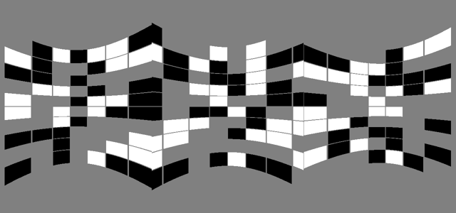
Example 2: Pulsating noise
Next we'll define some quickly changing noise that pulsates at a given frequency. We'll also set the colour to deactivate the red gun.
% To effectively remove the red gun, we also need to set the background. % This can also be done when you start srv.expServer. ptr = Screen('Windows'); Screen(ptr, 'FillRect', [0 1 1]*255) Screen(ptr, 'Flip'); % Create a sampler at 60 Hz samplerFs = 60; % Hz sampler = skipRepeats(floor(t*samplerFs)); % updates at our sampling rate % Create the checker stimulus noise = vis.checker(t); noise.show = true; % Turn on noise.colour = [0 1 1]; % Normalized RGB values % A grid of 60 rectangles along the altitude, 60 along the azimuth gridSize = [60 60]; % Each time the sampler updates, call randi, which will produce a [10 20] % array of values between 0 and 3. Subtract 2 from this to make values % between -1 and 1. noise.pattern = sampler.map(@(~) randi(3, gridSize)-2); % Each rectangle takes up all of its space, leaving no gap between % neighbouring rectangles. noise.rectSizeFrac = [1 1]; % Set the range of the checkerboard in visual degrees. The pulasation in % each dimension will happen in anti-phase and the maximum range will be % [-60 60] along the azimuth, and [-30 30] along the altitude: noise.azimuthRange = (0.75 + 0.25*cos(2*pi*t))*[-60 60]; noise.altitudeRange = (0.75 + 0.25*sin(2*pi*t))*[-30 30]; % Assign to our visual stimulus object for rendering vs.noise = noise;
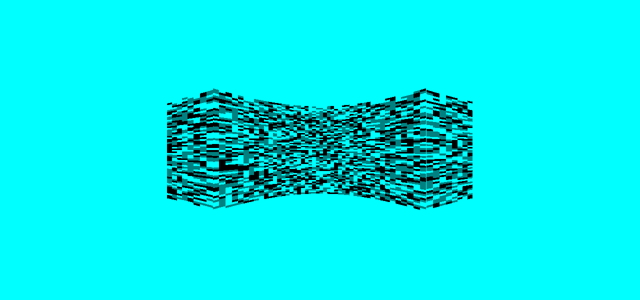
Example 3: A reversing checkerboard pattern
In this final example, let's create a fullscreen white and gray checkerboard pattern that reverses at a given frequency.
samplerFs = 6; % Flip frequency visualContrast = 1; % Contrast in range [0 1] % Make the initial checkerboard pattern nAz = 10; % Number of rectangles along the azimuth nAl = 36; % Number of rectangles along the altitude [xx, yy] = meshgrid(1:nAz, 1:nAl); checker = ( mod(xx,2)==0 & mod(yy,2)==0 ) | ( mod(xx,2)==1 & mod(yy,2)==1 ); initialPattern = double(initialPattern)'; % Flip the board at a certain sampling rate sampler = skipRepeats(floor(t*samplerFs)); % Define the pattern % When sampler updates, flip checkers stimuliTracker = sampler.scan(@(x,~)-1*x+1, initialPattern); % Create the checkerboard checkerboard = vis.checker(t); checkerboard.pattern = stimuliTracker * visualContrast; vs.checkers = checkerboard;
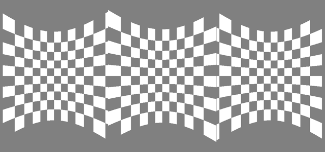
This can be easily extended so that the number of checkers can be set in mc:
function expDefFn(t, events, parameters, vs, varargin) nAz = parameters.nAz; nAl = parameters.nAl; % Map the parameters through the makeChecker function to create a new % pattern each time they update pattern = skipRepeats(nAz.map2(nAl, @makeChecker)); stimuliTracker = sampler.scan(@(x,~)-1*x+1, pattern); ... function checker = makeChecker(nAz, nAl) %MAKECHECKER Returns a white and gray alternating grid of rectangles [xx,yy] = meshgrid(1:nAz, 1:nAl); checker = ( mod(xx,2)==0 & mod(yy,2)==0 ) | ( mod(xx,2)==1 & mod(yy,2)==1 ); checker = double(checker)'; end
Grid
A grid overlay, whose parameters are all defined in visual degrees. Any parameter may be a signal.
help vis.grid
vis.grid Returns a Signals grid stimulus Produces a visual element for parameterizing the presentation of a grid. Uses VIS.RECTLAYER to create columns and rows, which are combined to form a grid.
Inputs:
t - Any signal, used to obtain the Signals network ID. Outputs:
elem - a subscriptable signal containing fields which parametrize
the stimulus, and a field containing the processed texture layer.
Any of the fields may be a signal. Stimulus parameters (fields belonging to elem):
azimuths - a vector of azimuths, one for each vertical grid line
altitudes - a vector of altitudes, one for each horizontal grid line
thickness - the line thickness (a scalar value, also in visual degrees)
colour - an array defining the intensity of the red, green and blue
channels respectively. Values must be between 0 and 1.
Default [1 1 1]
show - a logical indicating whether or not the stimulus is visible.
Default falseSee Also vis.emptyLayer, vis.rectLayer, vis.checker, vis.patch, vis.image
Below is an example of how to create grid lines every 90 degrees.
grid = vis.grid(t); grid.azimuths = [-180 -90 0 90 180]; grid.altitudes = [-90 0 90]; grid.thickness = 2; purple = [0.4940 0.1840 0.5560]; grid.colour = purple; grid.show = true;
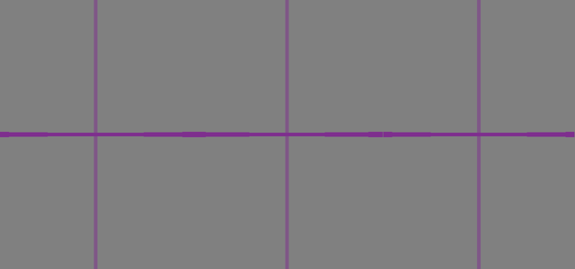
Adding stimuli to the renderer
In order for a stimulus to be rendered (and therefore to actually appear on the screen) it needs to be added to the visual stimulus signal. This is the fourth input to your expDef funciton ('vs' below).
function expDefFn(t, ~, ~, vs, ~, ~, ~)
The order in which these are assigned affects the layering of the stimuli. The first stimulus to be assigned will be at the bottom of the stack. In a sence it will be the furthest away, meaning it will be covered by all over stimuli that share the same space. Similarly, the last to be assigned is overlayed on top of all other stimulus layers, and therefore may mask the other stimuli.
The name you use when assigning your stimuli can be anything (e.g. vs.whatever = elem). It doesn't affect the stimulus at all, however each name should be unique.
The visual element fields can be set in any order. The following two code blocks are equivalent:
% The short way vs.grating = vis.grating(t, 'sin', 'none'); vs.grating.show = true;
% The long way stimulus = vis.grating(t); stimulus.show = 1; stimulus.window = 'none'; stimulus.grating = 'sinusoid'; vs.stim = stimulus;
FAQ
Is there a way to create a variable number of visual stimuli?
Not precisely. You can not copy visual stimulus objects in Signals, and all stimulus objects must be loaded within the experiment definition, before your parameter signals are set. The best option is to create a large number of stimulus objects with a for loop, then set the `show` properties to true for however many you want to use.
I don't have any errors but my stimulus won't appear. Why?
As with most signals, stimuli will not appear unless all their parameters have a value. For example, if you define your stimulus azimuth as events.expStart.delay(5).then(30), then the azimuth is undefined until 5 seconds after expStart updates. This is because it doesn't have any previous value and its inputs haven't yet updated so the renderer can't draw the stimulus. Plotting these signals or temporarily logging them as events will help you determine which input signals are not updating as expected.
Changing a parameter has no affect on the stimulus. Why?
Check that the parameter name is correct. You can assign to any field without error, but only the ones mentioned in the function help will do anything. Here's an example:
elem = vis.grating(t); elem.spatialFrequency = 0.01; % Doesn't do anything!! elem.spatialFreq = 0.01; % This is the correct field name to set the sf
How do I create a novel stimulus?
The advanced visual stimuli guide and looking at the code for the above functions should provide sufficiant information to create a novel parameterizable stimulus. You're welcome to create an issue on Github asking for help in doing this. In the short term you can always create your stimulus as an image and use vis.image.
Notes
(1) Once you've assigned your stimuli to 'vs', run setgraphic(vs) to render your image, and click the 'Play' button to start updating your clock signal (t). Whenever you add a new stimulus to 'vs', you call setgraphic again. When play button is pressed, you can edit the stimulus parameters and watch them update live in the stimulus window. You can close the window by pressing the X in the corner of the figure or run close all.
(2) If you're interested in how the images were saved, here is the code used:
setgraphic(vs) % Render the visual stimuli % Programmatically press the play button startstop = get(findobj(gcf, 'String', 'Play'), 'Callback'); startstop() % Play button callback imageArray = Screen('GetImage', Screen('Windows')); % Grab the image htmlPath = fullfile(getOr(dat.paths, 'rigbox'), 'docs', 'html', 'images'); filename = [htmlPath filesep 'plaid.png']; imwrite(imresize(imageArray, 0.5), filename, 'png') % Save at half-size
Etc.
Author: Miles Wells
v0.0.2
Next section Advanced Signals.
See also Using Signals. For technical information on the Signals viewing model, see this page.